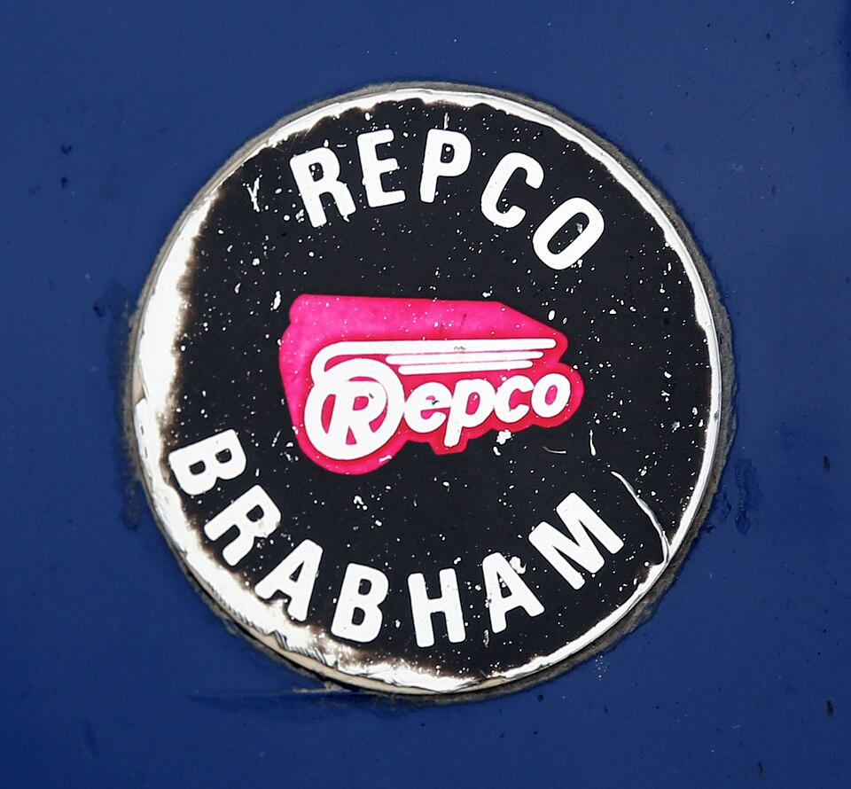

대표 로고대표 브랜드 마크
대표 로고대표 브랜드 마크홈 > 브랜드 매거진 > 기아
기아
기아(Kia)는 한국의 자동차 기업으로, 인터브랜드 2025 베스트 코리아 브랜드 3위(브랜드 가치 약 9.8조 원)에 올랐다.
산업 분야 모빌리티 · 공개 등급 자료 기반 · 브랜드 평가 4.6 ★
한눈에 보는 브랜드
기아(Kia)는 한국의 대표적 자동차 제조 브랜드다. 인터브랜드의 2025 베스트 코리아 브랜드 평가에서 브랜드 가치 약 9.8조 원으로 3위에 올랐다.
브랜드 관점
기아는 2021년 사명과 로고를 동시에 바꾸며 전기차 중심의 모빌리티 브랜드로 과감히 리포지셔닝했다. 디자인 정체성을 전면에 내세운 리브랜딩이 브랜드 가치 상승으로 이어졌다.
시작과 성장
1944년 자전거 부품사 경성정공으로 출발했다. 1952년 기아산업, 1990년 기아자동차로 이름을 바꿨고, 외환위기 후 현대자동차에 인수되어 2001년 현대차그룹에 편입됐으며 2021년 사명을 기아로 변경했다.
브랜드 아이덴티티
한국 자동차 산업을 대표하는 완성차 브랜드로, 인터브랜드 2025 기준 전년 대비 약 16.6% 증가한 브랜드 가치를 기록하며 국내 브랜드 순위 3위를 차지했다.
제품과 서비스
모닝·레이 등 경차, K5·K8·K9 세단, 셀토스·스포티지·쏘렌토·카니발 등 SUV·MPV, 그리고 전기차 전용 라인업 EV3·EV6·EV9를 운영한다.
사람들
현재 상태
인터브랜드 베스트 코리아 브랜드 2025에서 브랜드 가치 약 9.8조 원으로 평가받으며 전년 대비 두 자릿수 성장을 기록했다.
타임라인
정리된 연도형 이벤트가 없습니다.
BI/CI 변천사
대표 로고대표 브랜드 마크함께 읽을 브랜드
 모빌리티 · 자료 기반현대자동차
모빌리티 · 자료 기반현대자동차현대자동차(Hyundai Motor)는 한국을 대표하는 자동차 기업으로, 인터브랜드 2025 베스트 코리아 브랜드 2위(브랜드 가치 약 27.9조 원)에 올랐다.
 모빌리티 · 자료 기반KG모빌리티
모빌리티 · 자료 기반KG모빌리티KG모빌리티(KG Mobility)는 KG그룹 산하의 대한민국 완성차 제조 기업으로, 옛 쌍용자동차다.
 모빌리티 · 매거진 완성할리데이비슨
모빌리티 · 매거진 완성할리데이비슨할리데이비슨은 모터사이클보다 자유와 소속감의 의식을 더 강하게 판매한다. 제품은 이동수단이지만 브랜드의 핵심은 엔진음, 라이딩 문화, 커뮤니티, 반항적 이미지가 결합...
 모빌리티 · 편집 검수볼보
모빌리티 · 편집 검수볼보볼보(Volvo)는 1927년 스웨덴 예테보리에서 출발한 자동차 브랜드로, 승용차(볼보 자동차)와 상용차(볼보 그룹)로 분리돼 있다.
BMW는 이동수단을 만드는 회사를 넘어, 주행 감각과 조형 언어를 함께 설계하는 디자인 브랜드다. BMW의 강점은 성능 수치만으로 설명되지 않는다. 운전자가 차를 보...

모빌리티 · 자료 기반Repco렙코(Repco)는 1922년 호주 멜버른에서 시작한 자동차 부품·애프터마켓 소매 체인이다. 호주·뉴질랜드에 다수 매장을 둔 대표적 자동차 부품 소매업체다.
 모빌리티 · 자료 기반제네시스
모빌리티 · 자료 기반제네시스제네시스(Genesis)는 현대자동차그룹이 2015년 출범시킨 럭셔리 자동차 브랜드다.
 모빌리티 · 자료 기반쏘카
모빌리티 · 자료 기반쏘카쏘카(Socar)는 2011년 제주에서 시작한 한국 최대의 카셰어링 모빌리티 기업으로, 2022년 한국거래소에 상장했다.